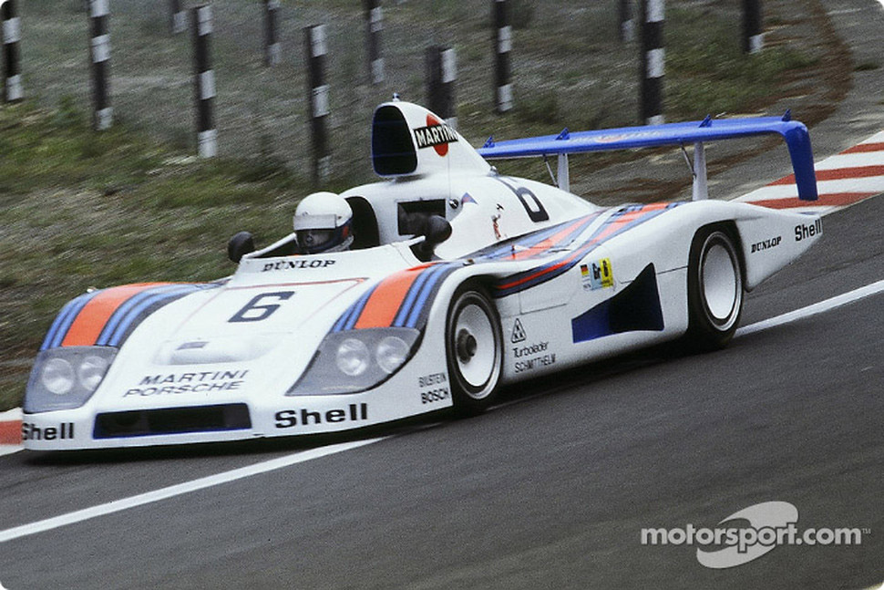
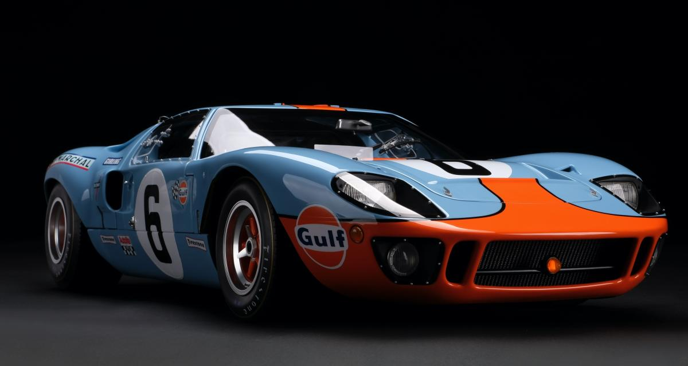
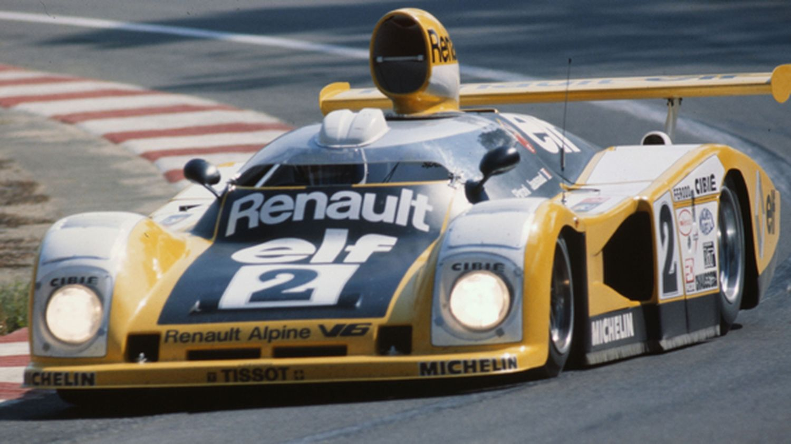
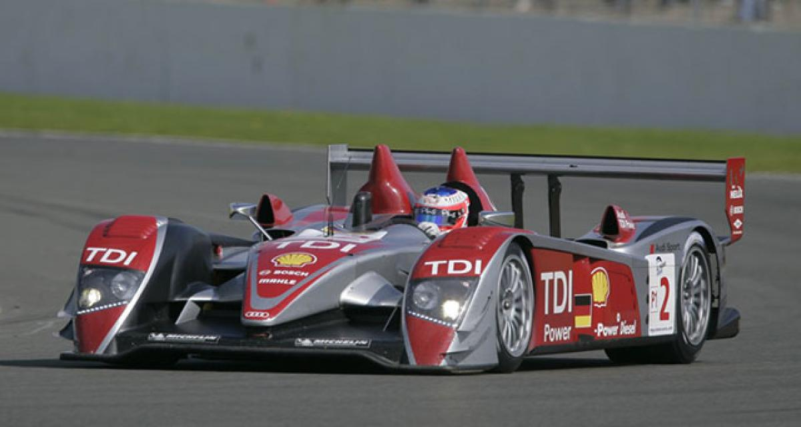

Le 23 juin 1991, Mazda remportait les 24 Heures du Mans avec la 787B et devenait ainsi le premier constructeur japonais à conquérir Le Mans. Bien avant Toyota, Mazda fut le premier constructeur japonais à remporter les 24 Heures du Mans. Ce
constructeur a aussi marqué l’histoire de la course grâce à sa fameuse 787B. Ce prototype de l’équipe Mazdaspeed avait la particularité d’être équipé d’un moteur possédant des pistons rotatifs d’une puissance de 700 chevaux. Les 24 Heures
du Mans constituait, une nouvelle fois, un véritable laboratoire et un formidable terrain de jeu pour tester cette technologie. En 1991, profitant de la transition entre les catégories Groupe C et Sport 3,5 litres atmosphériques, Mazda
engage trois 787B pour les 24 Heures du Mans. Mais le constructeur japonais doit faire face à trois Sauber-Mercedes C11, quatre Jaguar XJR-12 descendantes directes de celles qui l’ont emporté en 1990, deux Peugeot 905 débutantes et une
armada de 15 Porsche 962 ! Les 787B vont s’avérer performantes, fiables et sobres en consommation de carburant. La #55 pilotée par Betrand Gachot, Johnny Herbert et Volker Weidler s’est alors imposée devant deux Jaguar XJR-12. A peine
extirpée du cockpit, Johnny Herbert (qui avait assuré le dernier relais en course), déshydraté, fut dirigé vers l’infirmerie du circuit. De ce fait, il manqua la cérémonie de podium et ne put monter sur la plus haute marche. En 2011, dans
le cadre de la commémoration de la victoire de Mazda, le pilote britannique a eu le plaisir de reconduire la 787B mais aussi de monter sur le podium histoire de goûter aux honneurs qu’il n’avait pu connaître à l’époque.
2. Porsche 936, la première victoire du turbo !

Écoute le son !!!
Conçue pour participer au championnat du monde des voitures de sport (Groupe 6) en 1976, la Porsche 936 était une barquette reprenant nombre d'éléments de la Porsche 917. Elle était motorisée par un Flat 6 turbo de 2,1 L repris à la Carrera
RSR Turbo de 1974. Championne du monde 1976 (5 victoires absolues pour 7 épreuves), elle remporta également les 24 heures du Mans sous les couleurs du Martini Racing avec Gijs van Lennep et Jacky Ickx (1e victoire d'un moteur turbo), ainsi
que le Groupe 6 du Player's 200 (200 miles du Grand Prix de Mosport). En 1977, l'usine Porsche gagna de nouveau Le Mans de justesse avec la 936/77 (Jacky Ickx, Hurley Haywood et Jürgen Barth) devant une forte opposition de la part de l'écurie
Alpine Renault et ses A442. L'année suivante Renault vint à bout la marque allemande qui engageait deux 936/78 et la fameuse Porsche 935/78 « Mobydick » avant de se concentrer sur son programme Formule 1. Porsche, sans concurrent direct,
ne comptait pas s'aligner officiellement au Mans en 1979 mais, sous l'impulsion du pétrolier Essex, sortit ses 936 de leur retraite et les prépara à la hâte. Les deux voitures abandonnèrent (casse moteur et mise hors course), laissant
le Kremer Racing imposer sa 935 K3. La Porsche 936 termina sa carrière officielle en 1981 par une nouvelle victoire au Mans avec Jacky Ickx et Derek Bell. Elle fut transformée en coupé Groupe C par le Joest Racing en 1982 sous l'appellation
936 C (Bob Wollek champion du DRM la même année), avant d'être remplacée par la 956 que l'usine Porsche consentit à vendre aux équipes privées. En 1986, la 936 C ex-Joest fit une dernière apparition aux 24 heures du Mans, qu'elle termina
à la sixième place derrière cinq 956/962.
3. Ford GT40, le caprice de Ford !

Écoute le son !!!
En 1963, Ferrari n’existe que depuis 16 ans et, pourtant, elle est a déjà été sacrée cinq fois championne du monde en formule 1. Le constructeur éprouve cependant de sérieux problèmes d’argent et d’effectifs. Ford, de son côté, est un géant
de l’industrie automobile, mais sa gamme de voitures est vieillissante et son image pâtit. L’entreprise souhaite s’imposer sur le marché européen, et faire rêver à nouveau.
Déclaration de guerre : Des négociations avortées déclenchent la rivalité entre les deux constructeurs. Apprenant que Ferrari est en vente, Ford lui propose un échange commercial, mais apprend plus tard que les pourparlers
n’étaient qu’un moyen pour faire monter les enchères en vue d’un rachat par l’Italienne Fiat. Piqué au vif par l’attitude condescendante d’Enzo Ferrari, Henry Ford II, petit-fils du fondateur de Ford, jure alors de faire pâlir, sur la
piste, les voitures de luxe avec l’une des siennes.
Débuts cahoteux : Grâce au constructeur britannique Lola, qui utilise ses moteurs, Ford dispose d’un canevas pour sa future GT40, nommée ainsi à cause de sa hauteur de 40 pouces. Les premiers essais, en 1964, sont toutefois
catastrophiques, et l’on doit retourner à la table à dessin. Avec le concours de Carroll Shelby, pilote de course converti à la préparation de véhicules, et du pilote Ken Miles, Ford gagne quelques épreuves avec la GT40 en 1965, mais n’arrive
toujours pas à compléter les 24 Heures du Mans en raison de problèmes mécaniques.
Quand le vent tourne : En 1966, Ford se montre soudain confiante quant à ses chances lors de la fameuse course d’endurance. Henry Ford II joue gros : la haute direction, les actionnaires et le conseil d’administration
de son entreprise attendent des résultats. Le dirigeant distribue à toute son équipe des cartes sur lesquelles on peut simplement lire : « Vous feriez mieux de gagner ». Le miracle se produit enfin. Cette fois, Ferrari ne domine la course
que pendant une seule des vingt-quatre heures de l’épreuve, et doit abandonner en raison de bris mécaniques. Pour Ford, c’est la victoire que personne n’attendait. Pour Ferrari, c’est l’humiliation. Si bien que l’Italienne se retirera
des courses de ce genre quelques années plus tard. Ford, elle, interrompt le développement de la GT40 et la vend à des écuries privées.
4. Alpine A442 B, au tour des français !

Écoute le son !!!
L'Alpine A442 est une voiture de course construite pour les 24 Heures du Mans 1976, qui remporte l'édition 1978. Il s'agit de la première et de la seule victoire de Renault dans l'épreuve sarthoise. Lors de l'édition 1978 de l'épreuve mancelle,
la plus grande course d'endurance du monde, l'“armada” Alpine-Renault est menée par Gérard Larrousse, dont l'objectif affiché est de gagner. L'équipe est composée de trois versions bien différentes de l'Alpine : deux A442, une A442B et
une A443. Les deux premières voitures ont des châssis déjà vus en compétition au cours des années précédentes, tandis que les deux autres ont été développées spécifiquement pour les 24 Heures du Mans 1978. L'A442B est une version intermédiaire
entre les A442 et l'A443. Elle dispose de certaines modifications apportées à l'A443 telles qu'un capot avant et des portes modifiées pour permettre le montage d'une « bulle » surmontant le cockpit, des bas de caisse droits intégrants
des « balais » pour canaliser l'air sous la voiture et de nouvelles prises d'air sur le capot moteur et sur les pieds de l'aileron arrière, sans pour autant disposer du moteur d'une cylindrée augmentée (2 138 cm3 au lieu de 1 996 cm3)
et de l'empattement allongé caractérisant l'A443. Contrairement à l'équipage de l'A443 no 1, Didier Pironi et Jean-Pierre Jaussaud conservent pour la course la fameuse bulle surplombant le cockpit, ce qui leur permet de gagner de précieux
km/h dans la ligne droite des Hunaudières, mais au prix d'une chaleur étouffante à l'intérieur. C'est pourquoi l'A442B no 2 est dotée juste avant le départ de trous dans les portières avec un tuyau inséré dans celle de droite, apportant
ainsi un peu d'air frais au pilote. Après une course “sans histoire” aux avant-postes, L'Alpine A442B no 2 n'étant jamais positionnée plus loin que 4e au classement provisoire, l'équipage Pironi-Jaussaud prend la tête à la 18e heure de
course, remplaçant l'Alpine no 1 de Depailler-Jabouille. Ils ne quitteront plus la première place et franchiront la ligne d'arrivée en vainqueurs à 16h00 ce dimanche 11 juin 1978, en ayant parcouru 5044,530 km à une vitesse moyenne de
plus de 210 km/h. Ce succès aux 24 Heures du Mans marquera cependant le désengagement de Renault Sport en endurance pour se concentrer sur la Formule 1.
5. Audi R10 TDI, le premier Diesel !

Écoute le son !!!
En 2006, l’Audi R10 a été la première voiture de course avec un moteur diesel à remporter la victoire au général dans l’histoire des 24 Heures du Mans. La voiture de course, présentée à Paris le 13 décembre 2005, est propulsée par un nouveau
moteur 12 cylindres TDI à suralimentation biturbo de 5,5 litres. Avec plus de 475 kW et 1 200 Newton mètres, la Le Mans Prototype surpasse les performances de la plupart des véhicules de course Audi précédents, y compris ceux de sa prédécesseur
à succès, la R8. Le Carter du moteur V12 est entièrement en aluminium. En tant qu’unité diesel, le moteur V12 de la R10, qui est équipé de deux filtre à particules, est à peine perceptible de l’extérieur en raison de son bon fonctionnement.
Cependant, les caractéristiques particulières du moteur TDI ont présenté aux ingénieurs d’Audi Sport toute une série de défis. La pression d’injection de l’injection directe à rampe commune est bien supérieure aux 160 MPa atteints dans
les véhicules de série. La plage de régime utilisable se situe entre 3 000 et 5 000 tr/min et se situe donc à un niveau bas par rapport à un moteur essence conçu pour la compétition. Grâce à la courbe de couple favorable du moteur TDI,
le conducteur de la R10 doit changer de vitesse beaucoup moins souvent que dans la R8. Le couple maximal de 1,2 kilonewton mètre impose des exigences particulières à la transmission de puissance de la R10 - même les bancs d’essai moteur
d’Audi Sport ont dû être convertis en d’autres transmissions afin de pouvoir faire face à ces charges de couple élevées. Le châssis de la voiture a également dû être modifié : la R10 a un empattement nettement plus long que celui de la
R8. Les pneus avant particulièrement larges sont uniques pour un prototype du Mans. De nouvelles techniques ont également été utilisées dans le développement du châssis monocoque en plastique renforcé de fibres de carbone. Le châssis,
le moteur et la transmission forment un ensemble résistant à la torsion et entièrement porteur. Les premiers essais sur route ont été effectués fin novembre 2005. Le programme d’essais s’est achevé à la course des 24 Heures du Mans, les
17 et 18 juin 2006, le programme comprenait une sortie aux 12 Heures de Sebring le 18 mars, où une voiture conduite par Marco Werner, Emanuele Pirro et Frank Biela a abandonné après 117 tours en raison d’une surchauffe du moteur. La deuxième
voiture a conduit l’équipe Rinaldo Capello/Allan McNish/Tom Kristensen à la victoire au général avec un total de 349 tours, quatre tours devant la deuxième place. Comme pour le projet R8, l’équipe de Reinhold Joest soutient l’équipe de
développement d’Audi Sport. En 2007, la réglementation a réduit la capacité du réservoir de 10 %; le volume du réservoir est ainsi passé de 90 à 81 litres. Cela a été fait pour tenir compte du pouvoir calorifique supérieur de 10 % du carburant
diesel par rapport à l’essence de course. À la suite d’une modification de la réglementation par l’ACO en 2007, les véhicules diesel de la catégorie LMP devaient utiliser du biogazole à partir de 2008.